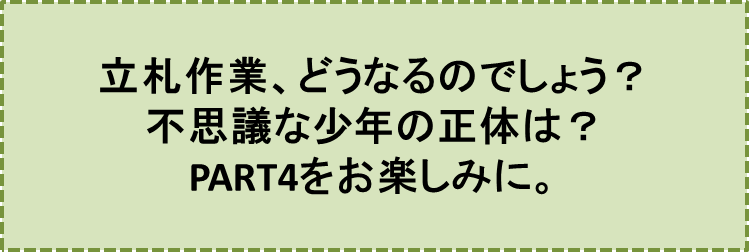

リンゴの木の神様とその弟子達-PART3-
『
笠原正雄
物語は、あの“並木の事件”から一週間たった日曜日の朝に移ります。
リンゴ並木は心地よい眠りから覚めて、大きく背伸びをしお日様そして青空に
“おっはよう”
と声をかけます。血色の良いリンゴ達は、赤色、青色、黄色、それぞれ自慢の色に輝いて大通りの一日が始まるのを待っています。
与平小父ハチロー小父はずいぶん早くに起きました。
しかも二人とも昨晩遅くまで立札作りに一生懸命でしたので、寝たと思ったら直ぐ起きたということになったでしょう。
子供達が手に手に立札を持って並木に現れたとき、お日様は真っ青な大空を既に高く駆け上がっていました。
大通りの白い大きな建物は、どの建物も日の光に一際美しく輝いています。
晩秋の日曜日をこよなく晴れた青空で迎えたことに、人々は胸を膨らませ喜々として笑顔で語り合い、お日様に弾かれたように元気いっぱいです。さぁ、立札を立てる作業が始まりました。
子供達も元気一杯でした。
杉板を削って作った真新しい立札が、お日様にあたって真っ白に輝くのを見ると、思わずぶるんぶるんと振り回してみたくなります。実際その通りにぶるんぶるんと振り回します。
何回も何回も振り回し、ついに尻餅（しりもち）をついて、大声で笑い出します。
町中の子供達が陽気に歌を歌いながら、続々とリンゴ並木にやって来ました。早く来た子も遅く来た子も一緒にお日様の日ざしを一杯に受けて立札作業に取り掛かります。
立札には思い思いの文章が綴られています。
あまり上手な字ではありませんが、短く
“リンゴ盗るべからず！”
と書いてある立札は与平小父の作品でしょう。
少し長く
“このリンゴ並木は子供達が愛情をこめて、一生懸命作った並木です。とても難しい“せん定”も子供達が立派にやり遂げました。リンゴを盗ったり枝を折ったりすることは、童心をひどく傷つけます”
との文章が、達筆で記されている立札は杉村先生の作品です。
実際、子供達の間で“リンゴ博士”と呼ばれている中学二年生の晴子は、近くの農業試験場に何回も通って「せん定」の実習を受けました。
リンゴの木達にとっての害虫、やっかいな鳥達を防ぐために、晴子をリーダーにして子供達は一生懸命努力する毎日です。
短く
“ボク達ワタシ達のリンゴを盗らないで”
とあるのはリンゴ会の子供達の作品に違いありません。
こんな立札が、リンゴ並木に山のように積み上げられました。2メートルを超す高さにまで積み上げられたでしょう。
さあーてこれで準備は完了しました。
“立札をどのように立てたら効果がより大きく期待できるか”
“どのように配置すれば並木の美観を損なわずに済むか”
大人も子供も膝を交えての真剣な相談が始まりました。大きな大きな輪になっての相談です。
リンゴ会の会長さんである中学二年生の三郎、そしてガキ大将ナンバー1の小学五年生の章介、ナンバー2の小学六年生のオサム、それに晴子……、みんな嬉しくてたまりません。
大人達と子供達とがこんなに一緒になって議論をした経験は、これまで全く無かったことだったからです。
杉村先生も真剣な眼差しで相談の輪の中に入っていますが、盛んに笑顔を見せています。相談そのものが杉村先生にとって楽しいことなのでしょう。
さてこの時、この物語のもう一人の主人公である少年、見知らぬ少年がいつの間にか、この輪の中に入っていました。都会からやってきたばかりの子、そんな感じのする少年です。
真っ赤なセーターを着こなし、ぴったり身体に似合う濃い緑色のズボンをはいています。黄金色のマフラーがそよ風に静かに舞っています。
少年はしばらく子供達や大人達の話に耳を傾けていましたが、あぁ、何ということでしょう。相談の輪の近くで2メートルを超す高さに積み上げられていた立札の山の上に駆け上がり、どっかと腰を下ろしたのです！
そしてさも愉快でたまらないというように
“ハッ、ハッ、ハッ、ハッ、ハァー” “ハッ、ハッ、ハッ、ハッ、ハァー”
と笑い始めました。
リンゴ会の子供達が驚いて振り返った時にも少年は顔色一つ変えず
“ハッ、ハッ、ハッ、ハッ、ハァー” “ハッ、ハッ、ハッ、ハッ、ハァー”
と、雲一つない青空を仰ぎ見ながら笑い続けます。
「誰だ！？あの子は」
リンゴ会の会長、三郎が大声で叫びます。
“こんな子、今まで見たことない！”
“よそっ子だよ！きっと”
子供達が口々に答えます。
しかし何と大胆な少年でしょう。
沢山の子供達に取り囲まれているにも拘わらず、少しも表情を変えないで、笑い続けています……。
少年のリンゴのような頬（ほお）に、日の光が強く当って跳ね返ります。
少年は、“眩（まぶ）しくてたまらない”というように目を細めながら皆を眺め、笑みを投げかけます。
三郎は困惑した表情で口を開きました。
「君、一体何がおかしくって、笑っているの！？ 僕達が一生懸命育ててきたリンゴ達が、何者かによってこっそり盗られてしまったのだよ。僕達はこんなことが、二度と起こらないように努力しているところなんだ。さぁ、立札の山から早く下りてくれ給え！」
三郎のこの真剣な言葉にも少年は笑ったままでした。
章介はもはや限界です。
「おい！ ぶん殴るぞ！」
とこぶしを高く振り上げました。
見知らぬ少年は、章介より一回りも二回りも大きかったのですが、この町一番のガキ大将、章介の敵ではないでしょう。
章介がこぶしを振り上げたまま山積みの立札に駆け上ろうとしたその瞬間、三郎が身を挺して防いでいなかったら、少年は二つか三つコブを作っていたことでしょう。
三郎は珍しく興奮した様子で少年に声を掛けます。
「君！ 一体何がおかしくて笑っているの！？」
「君たちが今やっていることさ！」
こんな答えにも三郎は“冷静になろうね”と自分自身にしっかり言い聞かせた上で、言葉を返します。
「では君、立札を立てることがどうしておかしいのか、説明してもらおうか」
三郎のこの質問に子供達は小躍りして喜びます。
見知らぬ少年は、必ず答えに窮して立札の山からすごすごと下り、肩を落してリンゴ並木から立ち去っていくに違いないと、想像したからでした。
しかし少年は少しも表情を変えずきっぱりと言い放ちます。
「立札を立てようとしていることさ。そんなものを立てたって、少しも役に立たない。並木の美観が損なわれるだけさ。残念なことだけど」
この言葉に、怒りのあまり顔をろうそくのように真っ白にした小学六年生の明が、口もとを震わせながら叫びました。
「全く役に立たないって！？ よくもそんなことが言えたことだ。リンゴ並木に全く関係のない“よそっ子”だからそんな勝手なことが言えるんだ！」
この鋭い言葉に見知らぬ少年は少し動揺したのでしょう。笑うのをやめて天を仰ぎました。
この様子を見て明も少し興奮が収まります。ほんの少し落ちついた調子で、言葉を続けます。
「もしもね。もしもだよ、今、立てようとしている立札が、何の役にも立たないと分かったら、ボク達にはちゃんと打つ手があるんだ」
ここまで言ってしまうと、明はすっかり興奮が収まりました。胸を思い切り張り自信たっぷりの表情になります。
「リンゴ並木に鉄条網を張り巡らし、その中に猛犬を二、三匹放しておく。どうだ！？」
この言葉を引き継いだのはオサムです。
「それでもだめなら、リンゴが熟した頃には町の人達と一緒に夜明け前から見張りをする！ それもだめならリンゴは熟さないうちに収穫する。
ボク達はリンゴ泥棒に好きなようにはさせないよ。ボク達の決心凄いだろ。どうだ君、驚いた？」
子供達の期待に反して少年はまるっきり驚いた様子がありません。
それだけではありません。以前にも増して大声で笑い出します。
章介は怒り心頭に発したのでしょう。数人の子供達が押さえる前に、立札の山の上の少年に真っ向から体当たり！
見知らぬ少年も章介も折り重なるようになって、立札の山から転げ落ちました。
三郎は、
“乱暴はよせ！”
と章介を睨（にら）みつけ、少年のズボンについた土を優しく払ってあげてから尋ねました。
「じゃあ君、どうすれば良いと言うの？」
「放っておくことさ。リンゴ並木をもっともっと大きくしていけばいいじゃないか！
それとも全く盗られたくないというのならあっさり全部、どこかの果樹園に移せば良い。そこなら一つも盗られないように、果樹園の人達が注意してくれるよ。分かった？」
もう、この言葉に対しては子供達は返す言葉もありませんでした。
周りの大人達もあっけにとられ、一体この先どうなるのだろうと、はらはらしながら子供達を遠巻きに眺めています。
少年の顔には、相変わらず、お日様がまぶしく当たっているためでしょう。時折り目を細めてリンゴの実を一つ一つ追い、その度ににっこりほほ笑みます。
リンゴ達一つ一つを見ることが、少年に無限の力を与えているように思われました。少年の顔にはいつも“笑み”が浮かびます。不思議なことですね。
三郎がその微笑につり込まれるように、口もとをほころばせながら少年に語りかけます。
「君は、まるで今日のお日様のように笑ってばかりいる。
けれどボクらにはその余裕は全くない。ほら、この立札に書いてあるように、このリンゴ並木は、子供達が一生懸命愛情をこめて育ててきたのだ。
ところがね。ある朝、心無い人がこっそり盗っていったんだ。このまま放っておくわけにはいかない……。何か手を打たなきゃならない。皆(みんな)真剣なんだ。分かってくれる？」
少年は相変わらずリンゴ達を一つ一つ目で追い、笑みを浮かべながら自信たっぷりに口を開きます。
「盗まれたって！？ ただ無くなっただけじゃない！」
少年のこの言葉に子供達は一斉に言葉を返します。
“盗まれる。無くなる。中身は同じことじゃないか！”
三郎はこんなやり取りには構わないで言葉を続けます。
「リンゴが盗まれた日から、町の人達が一生懸命犯人探しを始めてくれた。巡査さんは、休みの日を返上し犯人探しをしてくれたり、日曜日などには沢山の人が集って、どうしたら盗られないで済むかとても真剣に考えてくれた。でも結局、分からないことばかりなんだよ」
章介が三郎の言葉を遮るようにして口を挟みます。
「分かっているじゃないか！ 登山に来る人達だよ。あの大きなリュックに、一杯に詰まっていたペットボトルやお弁当は、帰り道ではすっかり空っぽになって山の中に捨てられ、かわりに並木のリンゴがリュック一杯に詰め込まれて持ち帰られてしまう」
少年は大きく首を横に振り
「それも間違っている！ 本当に面白い程間違っている！」
とつぶやくようにして、並木のリンゴ達を一つ一つとても優しい目で追いながら言いました。
章介はこんな少年の態度に、到底押えることができない怒りのはけ口をどこに見つけようかと、いらいらしていました。
もし、ここで唯一人でこの少年と相対していたならば、章介にとって少年は一回り大きな身体の持主でしたけれど、どちらかが泣き出して“参った”と言うまで取っ組み合ったでしょう。
でも、こんなに沢山の大人や子供達が見守っている場所では、どうして二人だけの取っ組み合いができるでしょうか。
三郎も同じ気持です。章介の心の中がよーく分かりました。三郎はとても静かな口調で最後のとって置きの質問を持ち出します。
「じゃあ。君に聞くけれどね。リンゴ並木の収穫を横取りしたのは一体誰だと言うの？」
この三郎の質問に子供達は、そうだ、そうだと言わんばかりに小さく手を叩き、小躍りして喜びます。この質問には、何人(なにびと)も答えることができないでしょうから。
子供達も周りで見守っていた大人達も、突然、並木に現れた邪魔者、見知らぬ少年が笑うのを止め、悲しげにうつむきながら、すごすごとリンゴ並木から引き揚げる様子を想像しました。
しかし、予想は全く当りませんでした。少年は無限の喜びに浸っているように、顔を真っ赤に上気させ両腕を大きく広げて
「知っている！ 本当に知っている！ ボクは、この目でしっかり見ていた！その後、皆さんがやって来て、大騒ぎしているのも見ていた！」
と言い放ちました。とても真剣なまなざしで……。
もう全く、大人も子供も尻餅（しりもち）をつく程驚いてしまいました。章介ですら、えっ！ という表情。ぽっかり口を大きく開けたまま、少年の顔を見つめました。
しかし間もなく、ここに居あわせた全ての人達の胸は、大きな期待で、一杯に膨らみました。リンゴを盗った憎むべき犯人を、まさに今、知ることができる時が来たのですから。
見知らぬ不思議な少年は誇らしげに胸を張り、並木のリンゴ達一つひとつを目で追った後、更に大きく胸を張って、自信たっぷりに口を開きました。
「神様がお取りになったのさ！」
沢山の子供達が、本当に尻餅をついてしまいました。いつまでもぽかんと、口を開けたままの子供達もいましたし、笑いこけたりしている子供も沢山にいました。
子供達はやっと我に返ると、一斉に声をそろえて少年に尋ねます。
“一体、何のどこの神様がお取りになったのだ？”
少年は、そんなこと分かり切っていることじゃないかと言わんばかりに、口もとに笑みを浮かべたままです。
日曜日には欠かさず教会に行っているけれど、今日ばかりは立札を立てるために教会を休んだ明が心配そうに
「キリスト様？」
と尋ねます。
「全く違うさ！」
少年は答えます。子供達の口からはさまざまな神様の名が飛び出しました。
少年はその度に首を強く横に振ります。そして、とうとう少年自身が何の神様なのか明かさねばならなくなりました。
少年は並木の中で一番大きなリンゴの木に駆けより、背丈よりも高い所にある枝に手を延ばしたかと思うと、オリンピックの体操選手かと思われる程軽い身のこなしで、枝の上にすくっと立ち一番大きなリンゴの実をもぎとりました。
甘酸っぱい香りを一杯に吸いこんだ後、
“かぶっ”“かぶっ”
と、音を立てながら、美味しくてたまらないなぁというように食べ始めました。
「あぁ、美味しい！ 本当に美味しい！ 君達の作ったリンゴ並木のリンゴが最高。日本で一番美味しいリンゴだよ！」
と言った後何のとまどいもなく
「君達のリンゴをお取りになったのは“リンゴの木の神様”さ」
と言葉を続けました。
“え！ リンゴの木の神様？ そんな神様、聞いたことがないよ”
多くの子供達が首をかしげました。
しかし小学校低学年の子供達は直ぐさま嬉しくなって
“わぁ、リンゴの木の神様だ！”“リンゴの木の神様だ！”
と手を叩き、はしゃぎながらリンゴの木の周りを飛び跳ねました。
少年は、こんな様子にも全く関心がないよ、と言わんばかりに手の届くかぎりのリンゴをもぎとって手にすると、並木に沿って歩き始めました。途中で子供達を振り返り、二、三回、手を大きく振ります。そして丘に続くゆるやかな坂道をゆっくりした足取りで登り始めました。
この騒ぎで、立札を立てる作業は、30分近く遅れてしまったでしょう。
大人達も子供達もすっかり水を差された感じです。立札作業は何だかとても気分の重い仕事に、なってしまいました。
三郎は、並木に集（つど）った人達の気持をしっかり理解することができたのでしょう。大きな声で
「皆さん、今日のところは少しだけ立札を建てて、しばらく様子を見ることにしましょう。できるだけ美観を損わないよう工夫して建てて下さい。
皆さんが作って下さった立札、沢山に残るでしょうけれどお家で(うち)大切に保管しておいて下さるようお願いします。しばらく様子を見ましょう」
人々はうなずき立札作業を始めました。突然並木に現れた少年の、明るい笑顔を思い浮かべながら……。
♪♪♪♪コーヒーブレイク♪♪♪♪
